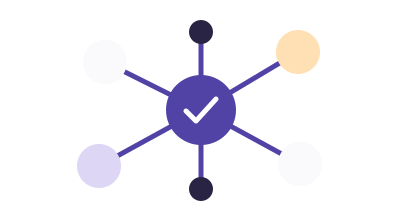

Kapitel 1Jetzt ausprobieren
KI in deinem Alltag
KI erkennen und ihre Möglichkeiten einordnen.
Einheit starten12 MinutenDein Einstieg in künstliche Intelligenz
Vom ersten Aha-Moment zum klaren Arbeitsauftrag: Entdecke, wie KI und Agenten deinen Berufsalltag verändern – und wie du die Kontrolle behältst.
Sechs Kapitel. Schritt für Schritt mehr Durchblick.
KI erkennen und ihre Möglichkeiten einordnen.
Einheit starten12 Minuten
Daten, Muster und Sprachmodelle verstehen.
Mit Ziel, Kontext und klaren Anforderungen arbeiten.
Fehler, Verzerrungen und ungeeignete Daten erkennen.

Aufträge planen, Werkzeuge nutzen und Kontrolle behalten.
Einheit starten15 MinutenEinen kaufmännischen Arbeitsauftrag selbst gestalten.
Jede Einheit verbindet kurze Erklärungen mit einem Beispiel aus der kaufmännischen Praxis. Prüfe dein Verständnis, nutze bei Bedarf eine Hilfe und versuche Aufgaben beliebig oft. Eine falsche Antwort ist eine Gelegenheit, etwas zu verstehen.
Beginne mit Kapitel 1 oder teste direkt die Agentensimulation in Kapitel 5. Die anderen Kapitel zeigen den geplanten Kursumfang. Zeitangaben sind Richtwerte.
Die Übungen verarbeiten deine Auswahl nur im Browser. Sie senden keine Antworten an uns oder einen KI-Dienst. Beim Neuladen oder Verlassen der Seite geht der Bearbeitungsstand verloren. Es gibt keine persönlichen Konten oder zentrale Ergebnisliste.
Die Übung verwendet vorbereitete Situationen und feste Regeln. Es arbeitet kein echtes KI-Modell im Hintergrund. Es werden keine Nachrichten verschickt oder Bestellungen ausgeführt.
Dies ist eine lokale Vorschau. Vor einer öffentlichen Bereitstellung werden Hosting, Verantwortlichkeit und erforderliche Datenschutzinformationen geprüft.